<html>
<head><title>ITM Museum</title></html>
<body>

<center>
<h1>The ITM Museum<br>
<font size=3>
A Python Implementation of
<br>
the Longley-Rice Irregular Terrain Model v1.2.2 (aka v1.3) 
</font></h1>

<p>
<i><a href="https://udel.edu/~mm/">Mike Markowski,</a></i>
<tt>mike.ab3ap@gmail.com</tt><br>
<small><i>This page is hosted at both
<a href=https://udel.edu/~mm/itm/>University of Delaware</a> and
<a href=https://github.com/ab3ap/itm>GitHub</a></i></small>
</center>

<center>
<table width=100%>
<tr>
    <td align=center>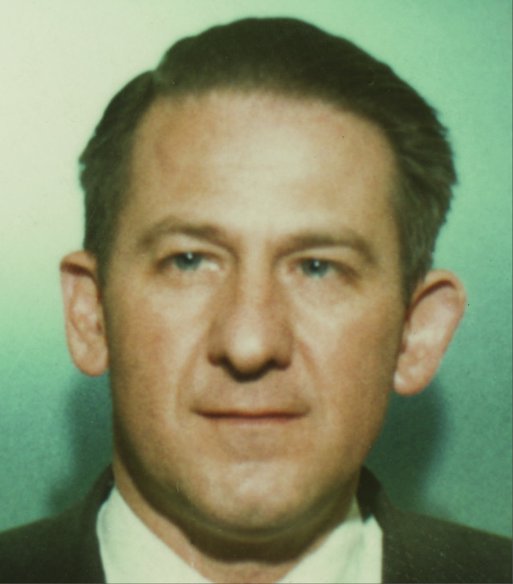<br>
        <i>Philip L. Rice<br>(1922-1997)</i></td>
    <td align=center>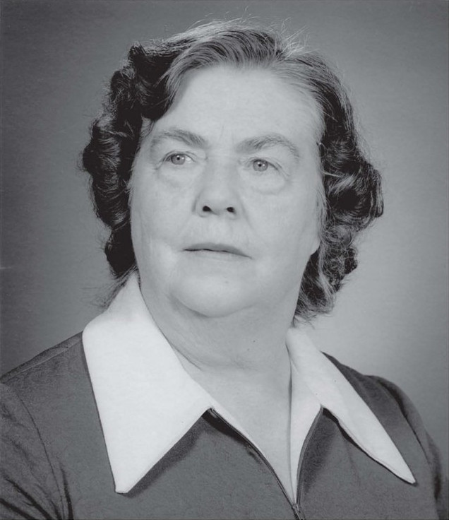<br>
        <i>Anita Longley<br>(1908-1986)</i></td>
    <td align=center>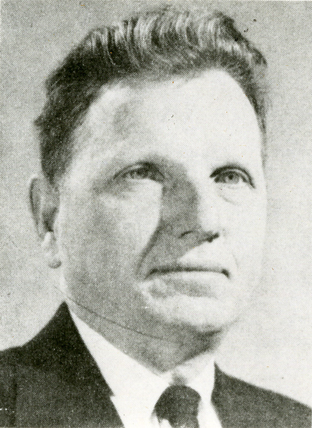<br>
        <i>Kenneth Norton<br>(1907-1992)</i></td>
    <td align=center>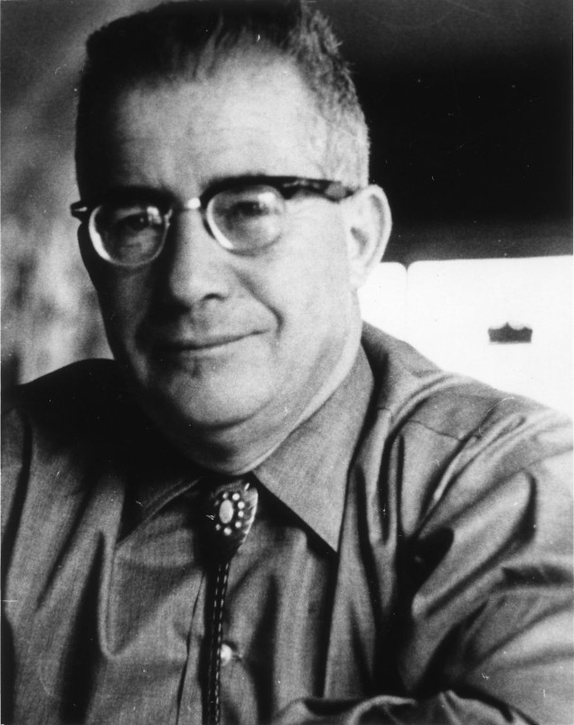<br>
        <i>Albrecht Barsis<br>(1916-1983)</i></td>
</tr>
</table>
</center>

<p>The following use itm.py:  RF coverage by
<a href="https://udel.edu/~mm/rfl">rfl.</a>  ITM
statistics in graphs described in
<a href="area.pdf">"ITM in Area Prediction Mode."</a>

<center>
<p>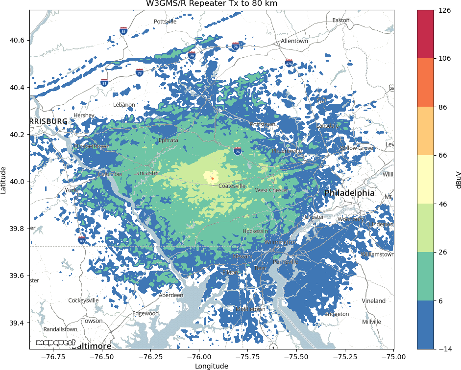<br>
<i>Predicted 90W signal on 146.985 MHz up to 80 km range. 15 kHz ENB and
residential noise level (-119 dBm).</i>
<table>
<tr><td>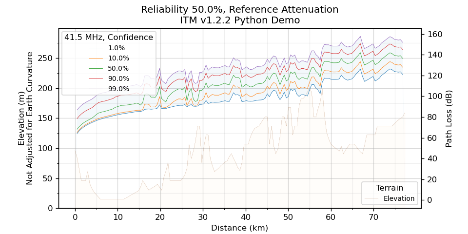</td>
    <td>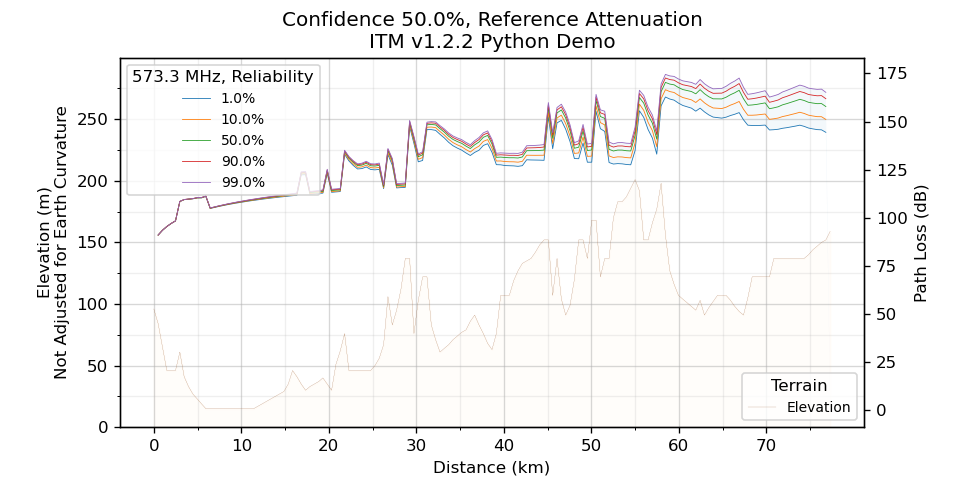</td></tr>
<tr><td align="center"><i>Path loss confidences for a given
        reliability</i></td>
    <td align="center"><i>Path loss reliabilities for a given
        confidence</i></td></tr>
</table>
</center>

<h2>Background</h2>

<p>In 1968, with a computer at your disposal and some environmental
information, ITM (Irregular Terrain Model) was the most
thorough RF propagation model available.  It dwarfed simpler models,
straightforward enough to be implemented on a slide rule.
Examples of path loss slide rules can be seen lower down on this page.
The ITM universe is the great-circle plane defined by two antenna locations
and earth center.  Minimal information is provided to the model for a path
loss estimate.  The data requiring the most effort to obtain is terrain
elevation between antennas.  But terrain data is readily available online,
so that is usually not an issue.

<p>After over a half century, the Longley-Rice ITM continues to be
widely used.  If you're like me, however, you know little about the
people themselves.  I spent some time trying to find out more about them
and include it below.  While the model is named after Anita Longley and
Phil Rice, it is an implementation of theoretical work from them and also
from Norton and Barsis.  Photos above are in authorship order of their
famous two volume work, "Transmission Loss Predictions for Tropospheric
Communication Circuits."  It is abbreviated by NTIA/ITS as TN101 v1 and v2
(Technical Note 101, Volume 1 and 2), abbreviations I use below.  The report,
"A Guide to the Use of the ITS Irregular Terrain Model in the Area Prediction
Mode" is abbreviated as Area Guide.

<h2>Unique Things Here</h2>

<p>Here are three categories of ITM items not found elsewhere and
hopefully make your visit worthwhile.  The "Re-creations" link is especially
helpful for those learning to use ITM and for those wanting to know how well
this python version duplicates Fortran results.

<h3>1. Python ITM and Programs</h3>
<ul>
<p><li>2022 <b><a href="itm.py">itm.py</a></b> (updated 11 Jun 2026),
ITM v1.2.2 in numpy-based Python, the item that took on a life of its
own and evolved into this page.  This version supports irregularly spaced
terrain profiles, differing from NTIA's, important when particular landmarks
must be accounted for.  <a href="use.html">This is how to use it</a> in your
code.  Also see lr.py below for a working example.

<p><li>2023 <b><a href="lr.py">lr.py</a></b> (15 Jul 2024) uses a configuration
file to run ITM in area or terrain profile mode.  The input file
<tt>examples.lr</tt> is fully commented and runs through 4 area mode and
2 profile mode examples.  Run by typing:
<tt>lr.py < <a href="examples.lr">examples.lr</a></tt><br>

<p><li>2023 <b><a href="recreate.html">Re-creations</a></b> of figures from the
1982 "Guide to the Use of the ITS Irregular Terrain Model in the
Area Prediction Mode."  They are good examples of how to use ITM.

<p><li>2023 <a href="../rfl"><b>rfl</b></a> (radio frequency link) uses
itm.py via GUI or command line for RF coverage map creation
or link budget calculations.  It is an example of using ITM in a larger program.

<!--
<p><li>2023 <b><a href="demoArea.py">demoArea.py</a>,
<a href="demoPfl.py">demoPfl.py</a></b> (10 May 2023) are used to compare
output between different versions of ITM.  Input format is from the
original Fortran and is arcane!  Lr.py does the same with a much easier
configuration file format.  To run the profile demo, type
<tt>demoPfl.py<<a href="demoPflData">demoPflData</a></tt>
and for the area demo, type
<tt>demoArea.py<<a href="demoAreaData">demoAreaData</a></tt>.
-->

</ul>

<h3>2. Newly Typeset in LaTeX</h3>
<ul>
<li>1965-1967 <a href="lr1.pdf">TN101 v1,</a> latest edits 17 Mar 2023.

<li>1965-1967 <a href="lr2.pdf">TN101 v2,</a> latest edits 17 Mar 2023.
<li>1982 <a href="area.pdf">Area Guide,</a> latest edits 4 Aug 2023.  ITM
v1.2.1 and <tt>QKAREA</tt> in appendices.
</ul>

<p>Please report typos, no matter how small.

<h3>3. Historical Versions of ITM</h3>

<p>These old ITM versions are for historical interest only, especially
appealing for retro-computing environments like simh and dtCyber.  There is
something oddly satisfying seeing them come back to life as if no time
has passed.

<ul>
<li>1968 Longley-Rice ITM, the original Fortran for old times' sake!
See internal documentation for usage info.  Several versions are offered.
    <ul>
    <li>Fortran IV, 1968 errata applied to variants for:
        <ul>
        <li><a href="lr1968-cdc3600-f4.f">CDC-3600,</a> 
         unmodified and uncompiled code.  OCR artifacts possibly present.  
        <li><a href="lr1968-dtcyber-f4.f">dtCyber emulator,</a> 
        with thanks to Neal Granroth.
        <li><a href="../pidp8i/itm1968.tar.gz">OS/8</a> on PDP-8/I,
        with thanks to Steve Tockey.
        <li><a href="lr1968-rt11-f4.f">RT-11</a> on PDP-11/45,
        with thanks to Michael Robinson.
        </ul>
    <li>Fortran 77
        <ul>
        <li><a href="lr1968-f77-bugs.f">Errata not applied.</a>  This
        version recreates (incorrect) results presented in the 1968 report
        linked to below.  I modified the Fortran IV code only enough to compile
		with Fortran 77.
        <li><a href="lr1968-f77.f">Errata applied.</a>
        </ul>
    </ul>

<li>1982 <a href="lr1982-f4.f">Longley-Rice v1.2.1,</a> Fortran IV. The 1985
errata (see NTIA memo below) are not applied.  The program QKAREA is at the
end of the file and provides sample Area Mode runs.
</ul>

<h2>NTIA/ITS and Other Links</h2>

Below are links to the original reports and code at the NTIA/ITS web site:

<ul>
<li>1965-1967 <a
href="https://its.ntia.gov/publications/details.aspx?pub=2726">TN101</a>
propagation theory by authors above.

<li>1968 <a href="https://its.ntia.gov/publications/details.aspx?pub=2784">
Prediction of Tropospheric Radio Transmission Loss Over Irregular Terrain:
A Computer Method,</a> the first Longley-Rice Model!

<li>1982 <a href="https://www.ntia.doc.gov/report/1982/guide-use-its-irregular-terrain-model-area-prediction-mode">A
Guide to the Use of the ITS Irregular Terrain Model in the Area Prediction
Mode</a>, v1.2.1

<li>1985 <a
href="https://its.ntia.gov/media/50675/Hufford_1985_Memo.pdf">Hufford's
memo</a> describing v1.2.1 errors.

<li>1993 <a href="https://github.com/NTIA/itm-longley-rice">ITM v.1.2.2.</a>
The 2012 C++ is a direct conversion from v1.2.2 Fortran, but naming errors are
introduced with lower case L occasionally interchanged with the numeral 1.

<li>2013 Jill Tietjen'a article, <a
href="https://www.researchgate.net/publication/260583112_Anita_Longley's_Legacy_The_Longley-Rice_Model_-_Still_Going_Strong_After_Almost_50_Years_Historical_Corner">Anita
Longley's Legacy: The Longley-Rice Model - Still Going Strong After Almost 50
Years</a>.

<li>2022 <a href="https://github.com/NTIA/itm">ITM v1.3 C++ code.</a>
Functionally identical to v1.2.2 and code base for future releases.

</ul>

<h2>ITM Software</h2>

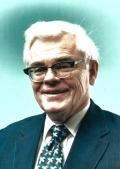<br><i>George Hufford (1927-2014)</i>

<p><a
href="https://www.legacy.com/us/obituaries/dailycamera/name/george-hufford-obituary?id=17238946">George
Hufford</a> of NTIA wrote the most recent fortran version of ITM.
Compute power was limited at the time and the code is heavily
focused on efficiency, something not as necessary today with better
hardware and compilers/interpreters.  If you have ever tried to convert
Fortran IV code to a more modern language you have suffered the
challenge of GOTOs jumping into the midst of loops and similar pain.  George
Hufford's code has none of that and was straightforward to convert.
His impressive Fortran code
was eventually converted to C++ by NTIA, line by line, making only
changes required by language syntax.

<p>When I took the ITS Fortran code and converted it to python, I removed
most Fortran efficiency concerns and matched equations from the papers as
similarly as possible.  I also try to fully annotate the code, indicating
which equations or report sections are implemented.  My initial line by line
python conversion resulted in a single threaded program using the original
loop constructs.  I next converted it to use numpy, avoiding loops by using
vector calculations so that more time is spent in the compiled C libraries
underlying numpy.  Memory is also allocated in contiguous blocks that way
for more efficient use.  This both shortens code and looks more like the
equations in ITM papers.  Spot testing of subroutines shows that the code
is sometimes 2x to 3x faster than the non-vectorized version.  I've made
no comparisons with Fortran or C++ versions but fully expect compiled code
to be significantly faster than interpreted python.  Conversion is easy,
testing is time consuming!  See <a href="recreate.html">recreations</a></b>
of figures from the 1982 Area Mode report for results of some of the testing.

<p>NTIA/ITS tells me they will soon (possibly 2023 <i>[edit: nope,
2023 has come and gone!]</i>) be releasing python wrappers for <a
href="https://github.com/NTIA/itm">their latest C++ code.</a> ITM 2027 is
in the works and it will be interesting to see what enhancements it brings.

<h2>Biographies of ITM Authors</h2>

<p>Lilli Segre, Publications Officer at NTIA/ITS, has generously provided
portions of the biographies below.  Additional information is from an
IRE transactions publication.  While Lilli Segre says the ITM model was
primarily motivated by Anita Longley, biographies below also include
authors of the theoretical 1967 TN101 reports published a year before the
Longley-Rice software model.

<h3>Phil Rice</h3>

<p><i>[From NTIA/ITS]</i>

<p>Phil Rice specialized in tropospheric propagation, mathematical modeling,
and satellite and space communication. He authored or co-authored many
publications of international interest. Rice was an author of ITS's Tech
Note 101: "Transmission loss predictions for tropospheric communication
circuits," for which he received the DOC Silver medal, along with Anita
Longley, Ken Norton, and Albrecht Barsis. Tech Note 101 described the site
general method of the Irregular Terrain Model. But Rice recognized the need
to go beyond the first volume of Tech Note 101, and he was instrumental
in the publication of Tech Note 101, Vol. 2 which included methods to
unify the calculations. Prior to his work with ITS, Rice worked to set up
blind-landing systems for the Air Force. He also acted as an advisor and
chair of study group V in the CCIR.

<p><i>[From March 1962 "IRE Transactions on Communications"]</i>

<p>Philip L. Rice (M ’52) was born in Washington, D.C., on December 25,
1922. He attended Lawrence College, Appleton, Wis., in 1941, and received the
B.S. degree from the Principia College, Elsah, Ill., in 1948.  During World
War II, he was commissioned at the Yale University Air Force Communications
School, and spent 18 months in Brazil setting up and operating blind-landing
systems for aircraft.  In 1948 and 1949, he was employed by the firm of
Raymond M.  Wilmotte, Inc., in Washington, D.C.  Since that time, he has
been a staff member of the Central Radio Propagation Laboratory of the
National Bureau of Standards. He is Chief of the Tropospheric Analysis
Section of the Radio Propagation Engineering Division at Boulder, Colo.

<p>Mr. Rice is a member of the Institute of Mathematical Statistics and
the Scientific Research Society of America.

<h3>Anita Longley</h3>

<p><i>[From NTIA/ITS]</i>

<p>Anita Longley provided a legacy still widely used today, 50 years
later. Her main research focus was tropospheric propagation model testing
and development. Models she worked on have important applications to
propagation over irregular terrain, and she further
examined the effects of climate on long-term variability. Longley
co-authored Tech Note 101, and described the concept of the "urban
factor" in propagation. She expanded and refined the predictions in
Tech Note 101 to create the Irregular Terrain Model (ITM or Longley-Rice)
computer program in 1968. In 1982 she undertook an extensive revision to
the model and it was re-released. Her publications were always backed up
by extensive measurements. The validation that Anita Longley and Rita
Reasoner did in 1982 became the gold standard for comparing models to
measured data. The ITM model has lasting importance in enabling the
communications applications we enjoy and rely on every day. This model
is one of the top downloads from the ITS website, and updates of her work
continue in many ITS modeling and prediction projects today.

<p><i>[From NTIA/ITS Telenotes 1971 newsletter, Vol 1, No. 3]</i>

<p>

<p>Anita Longley, born in Saakatchewan, Canada, received the B.A. degree in
Physics from McMaster University, and the M.S. degree in Physiological
Chemistry from the University of Minnesota.  After serving as a research
assistant and teaching at the high school and university levels, she joined
the National Bureau of Standards (CRPL) in 1955.

<p>Mrs. Longley’s main field of research is the development and testing
of tropospheric propagation models, with applications to communication
over irregular terrain, and the effects of climate on long-term variability.

<p>She is a member of U.S. Study Group V for the International Radio
Consultative Committee (CCIR).  She is also a member of the IEEE, RESA,
and Sigma Xi, and was awarded the Department of Commerce Silver Medal for
joint authorship of NBS Technical Note 101 on "Transmission Loss Predictions
for Tropospheric Communication Circuits."

<p>Mrs. Longley has also written or collaborated in writing more than
20 other research reports, and with P.L. Rice has prepared many of the
reports that are included in the published documents of the International
Radio Consultative Committee (CCIR).  Last year she presented a talk at
the conference sponsored by the Advisory Group for Aerospace Research
and Development (AGARD) of the North Atlantic Treaty Organization held
in Dusseldorf, Germany. She has presented papers at meetings of the
International Radio Scientific Union (URSI), a number of lectures for local
short-term propagation courses, and numerous reports to sponsoring agencies.

<p>Mrs. Longley's outside interests include travel, bridge, and time spent
with her family.

<h3>Kenneth Norton</h3>

<p><i>[From NTIA/ITS]</i>

<p>Kenneth A. Norton was a pioneer in propagation studies. He developed
a full set of definitions for system transmission, basic transmission,
path antenna gain, and related concepts fundamental to all propagation
modeling. In 1936 he developed usable equations for engineers from the
Somerfield equation while working for the FCC. In 1959 he developed the
concept of transmission loss in an article published in the NBS Journal
of Research. "System Loss in Radio Wave Propagation," described the
characteristics of tropospheric radio propagation and simplified the idea of
signal loss in radio. The equations in the article also allowed engineers to
easily compare antennas even at different frequencies. Norton was a co-author
of one of NBS’s most famous publications, Tech Note 101, "Transmission
Loss Predictions for Tropospheric Communication Circuits;" it was an
extension of his earlier work on transmission loss. The Norton surface wave
was named for him following his work on AM band radio propagation parallel
to the Earth’s surface. He retired as the Chief of Propagation Engineering.

<p><i>[From March 1962 "IRE Transactions on Communications"]</i>

<p>Kenneth A. Norton (A '29-M '38-SM '43-F '43) was born in Rockwell City,
Iowa, on February 27, 1907.  He received the B.S. degree in physics from
the University of Chicago, Ill., in 1928, and continued his studies at
Columbia University, New York, N. Y., from 1930 to 1931.

<p>During 1929 he was with the Western Electric Company, Chicago, Ill. From
1929 to 1934 he was in the radio section of the National Bureau of Standards,
Washington, D.C. Then, until 1942, he worked in the technical information
section of the Federal Communications Commission, Washington, D.C., where
he was responsible for a technical study of clear-channel broadcasting
and the initial technical studies leading to the allocation of frequencies
to television broadcasting. He was Assistant Director of the operational
research group and a Consultant on radio propagation in the Office of the
Chief Signal Officer, Washington, D.C., from 1942 to 1943 and from 1944
to 1946. He also served as a radio and tactical counter-measures analyst
in the operational research section of the Eighth Air Force in England,
from 1943 to 1944. Since 1946 he has been in the Central Radio Propagation
Laboratory of the National Bureau of Standards where he organized and
was Chief of the Frequency Utilization Research Section. At present he
is Chief of the Radio Propagation Engineering Division, Boulder, Colo.,
where he is currently concerned with radio guidance systems for missiles and
satellites, long-range radio communications systems involving transmission
via satellites, tropospheric scatter and propagation at very low frequencies.

<p>He has been a delegate to several international radio conferences,
including the Provisional Frequency Board, Geneva, Switzerland, 1948, and
the High-Frequency Broadcasting Conference, Mexico City, 1948. He was Vice
Chairman of the United States delegation to the 1950 meetings of Television
Study Group 11 of the International Radio Consultative Committee (CCIR)
in the United States, France, The Netherlands, and the United Kingdom.
He was a United States delegate to the Interim Study Group Meetings of
the CCIR, Geneva, 1958, and to the 9th Plenary Assembly of the CCIR,
Los Angeles, Calif. He was also a delegate to the 11th and 12th General
Assemblies of the International Scientific Radio Union (URSI), The Hague,
The Netherlands, 1954, and London, England, 1960, respectively, as well
as Chairman of the Local Assembly, Boulder, Colo., 1957.

<p>Mr. Norton was awarded the Stuart Ballantine medal by the Franklin
Institute for his work on radio propagation and FM and television frequency
allocations.  In 1960 he received the IRE Harry Diamond Memorial Award,
the highest award offered to a government employee in the field of radio
and electronics. He was cited for "contributions to the understanding
of radio wave propagation." In 1962 he received the Exceptional Service
Award of the U.S. Department of Commerce for "outstanding contributions and
leadership in the field of radio propagation research." He is a Fellow of
the American Physical Society, AAAS, AIEE, and a member of the Scientific
Research Society of America, the American Geophysical Union, the American
Mathematical Society, the Institute of Mathematical Statistics, and the
American Statistical Association.

<h3>A. P. Barsis</h3>

<p><i>[From March 1962 "IRE Transactions on Communications"]</i>

<p>Albrecht P. Barsis (A '49-M '53-SM '61) was born in Vienna, Austria, on
July 21, 1916. He graduated from the Realgymnasium in 1935, and attended the
Technische Hochschule in Vienna. He came to the United States in 1939, and
received the B.E.E. degree from George Washington University, Washington,
D.C., in 1948.

<p>From 1940 to 1942, and from 1946 to 1952, he was employed with George C.
Davis, Consulting Radio Engineer, Washington, D.C., where he worked
on broadcast allocations and directional antenna design.  During World
War II, he served as a Radio Technician with the psychological warfare
branch of the U.S. Army. In 1952, he joined the Boulder Laboratories of the
National Bureau of Standards, Boulder, Colo., where he has been engaged in
tropospheric propagation research, especially in the analysis and evaluation
of tropospheric propagation data and their application to system design.

<p>Mr. Barsis is a member of Sigma Tau, The Scientific Research Society of
America, and Commission II of the U.S. National Committee of URSI. He is
a registered professional engineer.

<h2>Path Loss Sliderules</h2>

<p>RF propagation models continue to evolve, providing better predictions of how
Mother Nature affects propagation of radio waves.  Today's fading models
that incorporate multipath and multiple antennas are the result of continued
enhancements of older models.  From early smooth earth models, more detail
was continually added as understanding increased.  The advent of
computers allowed the development and testing of ever more complex models.

<p>Around 2017 at a Tech Expo at work where companies show off their services
and hand out trinkets, I received a communications slide rule made of
cardboard, pictured below, with a 1971 copyright.  Notice that one of its
outputs is path loss.  AEL seems to have gone out of business in 1987, so I
wish I had asked the vendor where these slide rules came from.  Someone
somewhere must have found a box of unopened ones from decades ago, because
this is like new.

<p><center>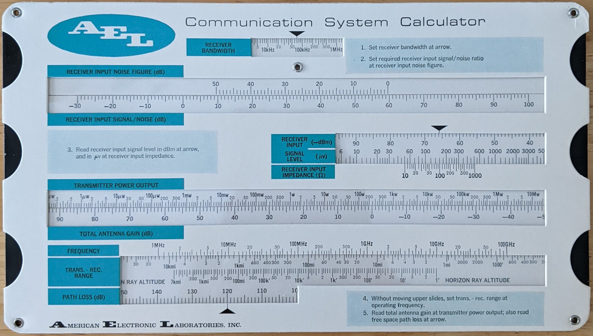</center>

<p>From yet another event I received the following more recent path loss slide
rule, this one copyrighted 1993, from EDO which is now part of Harris.

<p><center>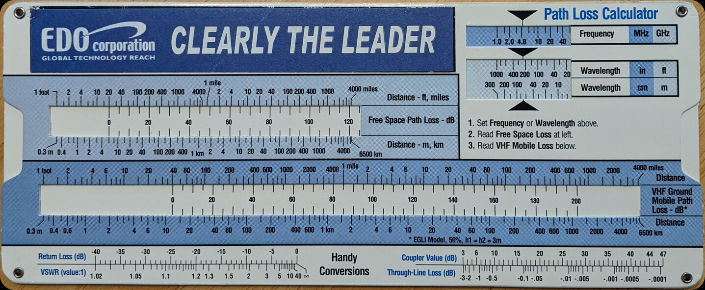</center>

<p>There is something enjoyable about the physical aspects of problem solving
on a slide rule, a mechanically simple tool yet does so much.  After playing
with the cardboard slide rules, I found myself spending $50 on an aluminum
slide rule made by Pickett and designed by Collins that does similar.  The
Collins instructions, <a href="https://udel.edu/~mm/sliderule/inserts/">scanned
here,</a> are copyrighted 1965.  This slide rule fills a
niche that might no longer exist, designing microwave links with <a
href="https://en.wikipedia.org/wiki/Passive_repeater">passive
repeaters.</a> After reading up on them, I couldn't resist writing <a
href="https://udel.edu/~mm/passive/">passive repeater python code</a>.

<p><center>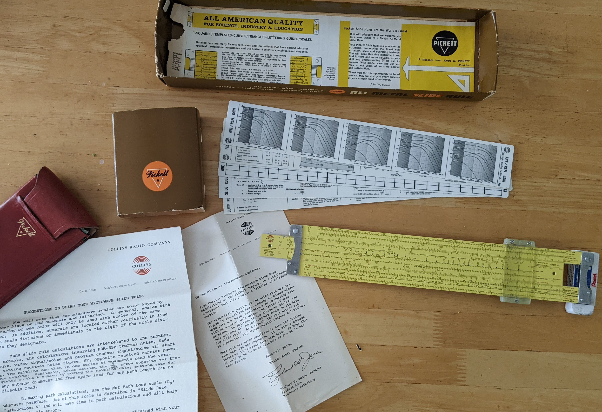</center>

</body>
</html>
